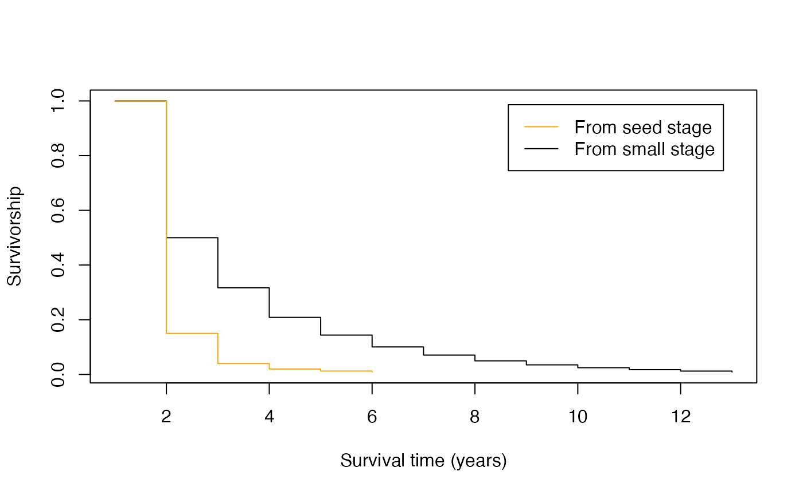

vignettes/a03_LifeHistoryTraits.Rmd
a03_LifeHistoryTraits.RmdThe aim of this vignette is to provide further details on the functions in Rage for estimating life history traits and on the traits themselves. Life history describes the sequence and pattern of the key events in an organism’s life cycle, pertaining to the schedule of survival, development, and reproduction. By aggregating individual-level demographic rates into an MPM, we can calculate a set of life history traits to describe the expected patterns for individuals within the population. These calculations follow methods from Caswell (2001) and Morris & Doak (2003).
We will start by loading the Rage package and an example MPM included in the package called mpm1, which we’ll be using throughout this vignette.
library(Rage) # load Rage
data(mpm1) # load data object 'mpm1'
mpm1 # display the contents
#> $matU
#> seed small medium large dormant
#> seed 0.10 0.00 0.00 0.00 0.00
#> small 0.05 0.12 0.10 0.00 0.00
#> medium 0.00 0.35 0.12 0.23 0.12
#> large 0.00 0.03 0.28 0.52 0.10
#> dormant 0.00 0.00 0.16 0.11 0.17
#>
#> $matF
#> seed small medium large dormant
#> seed 0 0 17.9 45.6 0
#> small 0 0 0.0 0.0 0
#> medium 0 0 0.0 0.0 0
#> large 0 0 0.0 0.0 0
#> dormant 0 0 0.0 0.0 0Although we demonstrate these trait calculations using a single MPM, each function can be applied to a set of MPMs for comparative analysis of life histories across species and populations. See the vignette “The functionality of RCompadre and Rage” for an example looking at longevity in mammal species across different ecoregions and taxonomic orders.
Two life history traits pertaining to survival that can be estimated using functions in Rage are mean life expectancy and longevity. Assuming that there is no trade-off between survival and reprdouction, these functions do not require information about reproduction. Instead, they only require a U matrix (supplied to the functions’ matU argument).
The function life_expect_mean() estimates mean life expectancy, or the mean time to death, and the variance in time to death can be obtained using life_expect_var().
life_expect_mean(matU = mpm1$matU, start = 1) # mean life expectancy from "seed" stage
#> [1] 1.250506
life_expect_var(matU = mpm1$matU, start = 1) # variance in life expectancy from "seed" stage
#> [1] 19.23639Life expectancy is dependent on a starting stage, which is specified using the start argument. That is, the expected time to death will be different for an individual that is currently in the first stage (i.e., start = 1) than if it is in a later stage along its life cycle. This is because the latter assumes the individual has survived to that stage, and it has already lived a portion of its lifespan. In the example MPM, life expectancy from the first stage (“seed”) is shorter than that from the second stage (“small”) due to the relatively low probability of survival in the seed stage, reducing the expected time to death.
life_expect_mean(matU = mpm1$matU, start = 2) # mean life expectancy from "small" stage
#> [1] 2.509116Sometimes one may want to include multiple starting stage classes when calculating life expectancy. For example, life expectancy from reproductive maturity (i.e. first reproduction) can be calculated while accounting for the possibility that an individual may first reproduce in one of several stages. In this case, the start argument can be specified as a vector (of the same length as the matrix dimension) giving the proportion of individuals starting in each stage. For example, life expectancy given 40% of individuals start from the “small” stage and 60% from the “medium” stage of the example MPM would be calculated as:
life_expect_mean(matU = mpm1$matU, start = c(0,0.4,0.6,0,0))
#> [1] 2.865667The function longevity() estimates the time to which the survivorship of a cohort falls below a user-defined critical threshold, specified as a value (between 0 and 1) supplied to the lx_crit argument. The specifications regarding the start argument for life_expect() also applies to this function. Using the example MPM, the post-germination years until survivorship falls to below 5% would be calculated as:
longevity(matU = mpm1$matU, start = 2, lx_crit = 0.05)
#> [1] 7Similarly to the mean life expectancy function, here one too can examine how longevity differs depending on the starting stage. With the example MPM, longevity increases from 2 years to 7 years after an individual germinates. Longevity is highest for the “medium” and “large” stages, but is the same for individuals starting in the “small” stage as those starting in the “dormant” stage.
longval <- c()
startvec <- c(1:dim(mpm1$matU)[1]) # vector of starting stages
for(i in c(startvec)) {
longval[i] <- longevity(matU = mpm1$matU, start = startvec[i], lx_crit = 0.05)
}
plot(longval, type = "l", xlab = "Starting stage", ylab = "Longevity to 5% survivorship")
longval
#> [1] 2 7 9 10 7In addition how long individuals can be expected to live, species and populations also differ in how quickly and often they reproduce, and how many offspring are produced and recruited into the population. Several related traits measure these various aspects of reproduction, and they require information contained in the F submatrix as well as the U submatrix.
The net reproductive rate, R0 is the cumulative number of offspring that a newborn individual will produce over its lifetime.
net_repro_rate(matU = mpm1$matU, matR = mpm1$matF)
#> [1] 1.852091This life history trait is also called the the per-generation growth rate, because if an individual produces more than one offspring, it more than replaces itself and so the population will grow. Note that this growth rate is different than the population growth rate $because the units of R0 are in generations rather than absolute time (i.e., the time step of the transition matrix, often 1 year). The length of time for one generation, or the generation time (T), can be obtained by:
gen_time(matU = mpm1$matU, matR = mpm1$matF)
#> [1] 5.394253The age at reproductive maturity is the average amount of time an individual will take to enter a reproductive stage for the first time in the population. Similar to life expectancy, mean time to reproduction will depend on the starting stage, again specified using the start argument. In the case of the example MPM where the first stage is “seed”, one may be more interested in estimating the time to reproduction for individuals that have already germinated (i.e., start = 2).
mature_age(matU = mpm1$matU, matR = mpm1$matF, start = 2)
#> small
#> 2.136364The probability of reaching reproductive maturity before death, for individuals that have already become established (e.g. germinated in the case of plants in this particular example), is:
mature_prob(matU = mpm1$matU, matR = mpm1$matF, start = 2)
#> [1] 0.4318182As discussed above, there may be multiple stages in which an individual can first reproduce. One can also use an MPM to estimate the proportion of individuals that would be expected to first reproduce in each of the reproductive stage classes. For this, we need to specify which stages are reproductive in the repro_stages argument. This can be determined from the F matrix based on the columns that have non-zero values, or a non-zero probability of producing offspring.
mpm1$matF # We see that the "medium" and "large" stages are reproductive
#> seed small medium large dormant
#> seed 0 0 17.9 45.6 0
#> small 0 0 0.0 0.0 0
#> medium 0 0 0.0 0.0 0
#> large 0 0 0.0 0.0 0
#> dormant 0 0 0.0 0.0 0
maturedist <- mature_distrib(matU = mpm1$matU, start = 1L, repro_stages = c(FALSE,FALSE,TRUE,TRUE,FALSE))
maturedist
#> seed small medium large dormant
#> 0.00000000 0.00000000 0.92105263 0.07894737 0.00000000One can then use this distribution to update the estimate of mean life expectancy from reproductive maturity, using the data-based distribution rather than the hypothetical one (40% in “small” stage and 60% in “medium” stage) used above:
life_expect_mean(matU = mpm1$matU, start = c(maturedist)) # mean life expectancy from maturity
#> [1] 3.179005
life_expect_mean(matU = mpm1$matU, start = 2) # mean life expectancy from "small" stage
#> [1] 2.509116In doing so, mean life expectancy from maturity is 0.67 years longer than that after germination (from “small” stage). In this case, this difference is due to the higher average survival once an individual reaches reproductive maturity.
Other life history traits are calculated from a life table rather than an MPM, in which case one can first use the mpm_to_ group of functions to derive the necessary life table components: age-specific survivorship (lx), survival probability (px), mortality hazard (hx), and reproduction (mx). As above, start stage can too be specified as a specific stage (by number or by name), as well as a vector of proportions in each stage. One can calculate the age-specific rates for post-germination individuals using the example MPM:
lx <- mpm_to_lx(matU = mpm1$matU, start = "small")
px <- mpm_to_px(matU = mpm1$matU, start = "small")
hx <- mpm_to_hx(matU = mpm1$matU, start = "small")
mx <- mpm_to_mx(matU = mpm1$matU, matR = mpm1$matF, start = "small")There are multiple applications for these life table estimates. For example, one can visualize the difference in survival curves for individuals starting from the seed stage compared to survival post-germination.
lx_seed <- mpm_to_lx(matU = mpm1$matU, start = "seed")
plot(lx, xlab="Survival time (years)", ylab="Survivorship", type="s", col="black")
lines(lx_seed, type="s", col="orange")
legend("topright", inset=c(0.05,0.05), c("From seed stage", "From small stage"),
lty = c(1,1), col = c("orange","black"))
In this case, there is a large drop in survival (and thus high mortality) in the first year for seeds. Specifically, more than 80% of seeds are not expected to survive their first year, compared to germinated individuals that have a 50% chance of surviving their first year.
Finally, one can use these life table components to calculate additional life history traits related to the types of survival and reproduction trajectories.
Demetrius’ entropy is a measure of how reproductive episodes are spread across the lifespan (Demetrius & Gundlach 2014). A value of 0 indicates only one reproduction event in the entire life time (also known as semelparity), and larger values indicate a more even distribution of reproductive events over the life cycle.
Keyfitz’ entropy describes the shape of the age-specific survivorship curve (Demetrius 1978). Values greater than 1 correspond to survival curves type I (high survival in early part of life and decreasing over time), a value of 1 to survival curve type II (constant survival), and values less than 1 to survival curve type III (low survival early and increasing over time) (Salguero-Gómez et al. 2016).
entropy_d(lx, mx) # Demetrius' entropy
#> [1] -1.358418
entropy_k(lx) # Keyfitz' entropy
#> [1] 0.948235It is important to note that both of these entropy measures may produce unexpected results if only partial survivorship and fecundity age-based trajectories are used in the calculations. Indeed, both metrics of demographic entropy are sensitive to the length of the those trajectory vectors. For example, the Demetrius’ entropy calculated above has a negative value due to being calculated from age-specific survivorships and fecundities starting from the “small” stage, and therefore it does not include the full life cycle.
A more robust way to describe these trajectories is using the area under the curve method.
A life course can be described in terms of its pace (timing of events) and its shape (the distribution of events, either for an individual or for a population). There are several candidate metrics for the pace and shape of mortality, and of fertility. A good measure of the pace of mortality is life expectancy (the average age of death) and a good measure of the shape of mortality are the life-table entropy measures mentioned above, which describe both the survivorship curve and the mortality trajectory (see Baudisch 2011). Measures describing the pace and shape of fertility have also been developed (Baudisch & Stott 2019). In addition to the entropy measures described above, the shape_ functions are also useful metrics.
shape_surv(lx) # shape of survival/mortality trajectory
#> [1] -0.02687175
shape_rep(mx) # shape of fecundity trajectory
#> [1] -0.01505996Baudisch, A. 2011. The pace and shape of ageing. Methods in Ecology and Evolution, 2(4), 375– 382. https://doi.org/10.1111/j.2041-210X.2010.00087.x
Baudisch, A, Stott, I. 2019. A pace and shape perspective on fertility. Methods Ecol Evol. 10: 1941– 1951. https://doi.org/10.1111/2041-210X.13289
Caswell, H. 2001. Matrix Population Models: Construction, Analysis, and Interpretation. 2nd edition. Sinauer Associates, Sunderland, MA. ISBN-10: 0878930965
Demetrius, L. 1978. Adaptive value, entropy and survivorship curves. Nature 275: 213-214.
Demetrius, L., & Gundlach, V. M. 2014. Directionality theory and the entropic principle of natural selection. Entropy 16: 5428-5522.
Morris, W. F. & Doak, D. F. 2003. Quantitative Conservation Biology: Theory and Practice of Population Viability Analysis. Sinauer Associates, Sunderland, MA. ISBN-10: 0878935460
Salguero-Gómez, R., Jones, O. R., Jongejans, E., Blomberg, S. P., Hodgson, D. J., Mbeau-Ache, C., Zuidema, P. A., de Kroon, H., & Buckley, Y. M. 2016. Fast–Slow continuum and reproductive strategies structure plant life-history variation worldwide. Proceedings of the National Academy of Sciences 113 (1): 230–35